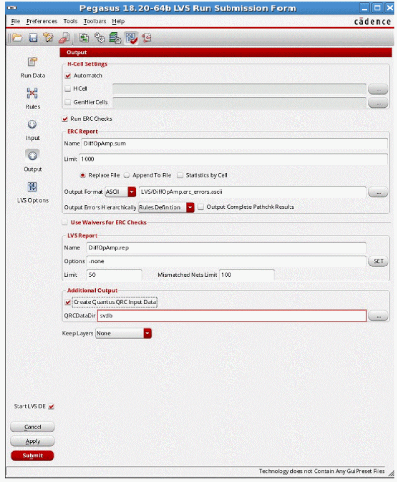

4
IR/EM Analysis Flow
- Overview
- Running Pegasus or PVS LVS
- Running Pegasus or PVS Quantus
- Running Extraction with Quantus QRC (Calibre) Interface
- Running a Spectre Simulation
- Running an APS Simulation
Overview
Before performing IR drop and EM analysis in Voltus-Fi-L, you need to generate the extracted view of the design and then simulate this view. This is referred to as the IR/EM Analysis flow.
The IR/EM Analysis flow involves the following:
- Comparing the schematic design with the layout design to verify the logical connectivity of the design. This is done by running either Pegasus LVS/PVS LVS (Layout as compared to Schematic) or Calibre® LVS.
- Extracting the parasitic resistance and capacitance from the power and ground nets and creating an extracted view of the design using Quantus QRC.
- Simulating the extracted view of the design using Spectre or APS simulators.
Once these are completed successfully, the simulation results generated as an output, are used as input in Voltus-Fi-L to view and plot the IR drop and EM analysis results on the Virtuoso layout and generate reports of the analyses to identify and debug regions of high IR drop and EM violations in the design.
The above tasks are detailed in the following sections:
- Running Pegasus or PVS LVS
- Running Pegasus or PVS Quantus
- Running Extraction with Quantus QRC (Calibre) Interface
- Running a Spectre Simulation
- Running an APS Simulation
This high-level flow of the above tasks is shown below.
Figure 4-1 Voltus-Fi-L Pre-Requisites High-Level Flow
The following sections describe this flow in detail and explain the options to be set for Pegasus/PVS and Spectre for this analysis and the flow for Voltus-Fi-L.
Running Pegasus or PVS LVS
Before extracting the power grid and the signal nets, run Pegasus or PVS LVS on the layout view of the design you want to analyze. No special modifications are required to be made to the Pegasus/PVS LVS decks.
In the Virtuoso Layout Suite, perform the following steps:
- Select Pegasus/PVS from the Main menu of the Virtuoso Layout Suite.
-
Select Run LVS from this menu. This is shown below.
Figure 4-2 Run LVS Menu from PVS MenuFigure 4-3 Run LVS Menu from Pegasus Menu -
The Pegasus/PVS LVS Run Submission Form opens. The Pegasus and PVS LVS Run Submission forms are shown below.
Figure 4-4 Pegasus LVS Run Submission FormFigure 4-5 PVS LVS Run Submission Form
- Click Run Data and specify the Run Directory path.
-
Click Rules and specify the rules deck file as shown below.
Figure 4-6 Specifying the Rules Deck File -
Select Input and provide the input data in the Layout and Schematic group boxes. The forms for Pegasus are shown below.
Figure 4-7 Specifying the Input Options in Pegasus -
Select Output on the left side of the form and provide the required inputs, as shown below.
Figure 4-8 Specifying the Output Options in Pegasus -
Click Apply. The Pegasus/PVS LVS run starts. At the end of the LVS run, the following window opens. It displays the Comparison Results as Match.
Figure 4-9 LVS Run Status -
The LVS Run results are stored in the
runLVSdirectory.
Running Pegasus or PVS Quantus
After the LVS run is complete, the parasitic resistance and capacitance must be extracted from the power and ground nets for power-grid analysis, and from the signal nets. Although, no rule changes are required to run Quantus, some options need to be enabled to generate the extracted view correctly. For more information on running Quantus, see the Quantus QRC Extraction Users Manual.
The following steps are detailed for running Pegasus or PVS Quantus:
- In the main menu of the Virtuoso Layout Suite, choose QRC – Run Pegasus or Run PVS – Quantus.
-
The Quantus (Pegasus) or Quantus QRC (PVS) Interface form opens. These forms are shown below.
Figure 4-10 Quantus (Pegasus) Interface FormFigure 4-11 Quantus QRC (PVS) Interface Form - Specify the Pegasus/PVS Data Directory and the Quantus/Quantus QRC Tech Lib.
- Click OK.
-
The Quantus (Pegasus)/Quantus QRC (PVS) Parasitic Extraction Run Form opens. In this form, select the Setup tab.The form shown below opens.
Figure 4-12 Quantus (Pegasus) Parasitic Extraction Run Form – Setup TabFigure 4-13 Quantus QRC (PVS) Parasitic Extraction Run Form – Setup Tab - Ensure that the Output is set to Extracted View.
-
Select the Extraction tab. The form shown below opens.
Figure 4-14 Quantus (Pegasus) Parasitic Extraction Run Form – Extraction TabFigure 4-15 Quantus QRC (PVS) Parasitic Extraction Run Form – Extraction Tab -
In the Extraction Type cyclic field, specify either resistance and capacitance (RC) or only resistance (R only). In the above image, RC is selected, which means that both resistance and capacitance are being extracted. When Extraction Type selected is R Only, the simulation time is short. While selecting the extraction type, consider the type of simulation being run.
For example, to run a DC operating point (DCOP) simulation, select R only as the Extraction Type because the capacitance values are not required.
- Select Net Selection Type – Selected Nets Proper.
-
Select the Netlisting tab. The form shown below opens.
Figure 4-16 Quantus (Pegasus) Parasitic Extraction Run form – Netlisting TabFigure 4-17 Quantus QRC (PVS) Parasitic Extraction Run form – Netlisting Tab - Click EM Analysis to activate the extraction options specific to EM analysis during the Quantus QRC run.
- Click Add Explicit Vias to prevent the merging of via resistance into the net resistance.
- In the Parasitic Resistance Width cyclic field, specify Drawn. The parasitic resistance width option annotates the extracted view with the width of parasitic resistors, which is required to compute the Current Density.
- Click Parasitic Resistance Temperature Coefficent if you want to store TC1 and TC2 parameters in the extracted view. This is useful when you want to perform IR/EM analysis at different temperatures.
- Deselect Import Globals to enable Quantus QRC to extract resistance from power and ground nets.
extracted_view. To ensure this, the Parasitic Resistors Models switch must be set to “Include Model” or “Include as Comment”. If “Include Model” is selected, you will be required to update the emDataFile.txt to match the model names.-
Click Apply. The Quantus extraction run will start. At the end of the extraction run, the following window opens to show the status of the run.
Figure 4-18 Quantus QRC Run Status
Running Extraction with Quantus QRC (Calibre) Interface
Quantus QRC accepts a Calibre database as input for extraction in place of Pegasus LVS or PVS LVS.
The extracted view includes a standard DFII (design framework II) extracted view, which has parasitic properties backannotated onto a layout design for simulation purposes. The extracted view can be simulated using third-party simulation tools like Spectre or APS (Accelerated Parallel Simulator) to interpret the Quantus QRC output effectively, and use the simulation results as input to Voltus-Fi-L.
In the main menu of the Virtuoso Layout Suite, perform the following steps:
- Choose QRC – Run Calibre-Quantus QRC
-
The Quantus QRC (Calibre) Interface form opens. This form is shown below.
Figure 4-19 Quantus QRC (Calibre) Interface Form
For more information on how Quantus QRC reads the Calibre input data and performs extraction, see “Running Quantus QRC with Calibre® Input” in the Quantus QRC Extraction Users Manual.
Running a Spectre Simulation
After running extraction, the next step is to use an existing testbench and simulate the extracted view within the Virtuoso® Analog design Environment (ADE). The results of the simulation are stored in the simulation directory. This directory is specified when loading the IR drop and EM analysis results in Voltus-Fi-L.
You can use Cadence® Spectre® Circuit Simulator. This simulation environment saves the voltages on all the nodes in the design. You must run a transient or a DC operating point (DCOP) simulation to perform IR Drop analysis or electromigration analysis.
An example of a testbench in Virtuoso® Schematic Editor is shown below.
Figure 4-20 Testbench in Virtuoso Schematic Editor
Follow these steps to run Spectre simulation for Voltus-Fi-L:
-
In the Environment Options form, specify the extracted view in the simulation in the Switch View List field. You can also use config views. This is shown in the figure below.
Figure 4-21 Environment Options Form -
In the Save Options form, ensure that the allpub option is selected. The Options dialog box is activated by the Outputs – Save All command. Only the node voltages are saved during the Spectre simulation. You do not need to create any
measurestatements. This is shown in the figure below.
Figure 4-22 Save Options Form
Before proceeding to the next step, ensure that Spectre simulation is completed successfully. It is useful to save the Spectre simulation state for later use, if required. The Voltus-Fi-L Reader can read results in SST2 database format as well as PSF/PSF-XL waveform format.
Running an APS Simulation
You can perform simulation using the Virtuoso® APS. These simulation results can be used as input to Voltus-Fi-L instead of the simulation results from Virtuoso® Spectre simulator, if required. Virtuoso® APS is a next-generation SPICE simulator that provides high performance, high capacity circuit simulation with full Cadence® Spectre® Circuit Simulator accuracy. APS achieves maximum simulation performance by enabling multi-threading on multi-core and multi-CPU shared memory systems. This simulator lets you simulate large pre- and post-layout designs faster than the Spectre simulator.
The APS use model is identical to that of Spectre, with the same netlist syntax, device model, analyses, features, and output format support.
Follow these steps to run the APS simulation for Voltus-Fi-L:
- In the Environment Options form, specify the extracted view in the simulation in the Switch View List field. You can also specify config views. This is shown above in the “Running a Spectre Simulation” section.
-
In the Save Options form, ensure that the allpub option is selected. The Save Options dialog box is activated by the Outputs – Save All command. This is shown above in the “Running a Spectre Simulation” section. Only the node voltages are saved during the APS simulation. No
measurestatements need to be created. -
In the High-Performance Simulation Options form, ensure that All is selected as Preserve Instance. This is shown in the figure below.
Figure 4-23 High-Performance Simulation Options Form
Before proceeding to the next step, ensure that the APS simulation is completed successfully. It is useful to save the APS simulation state for later use, if required. Voltus-Fi-L reader can read results in the SST2 database and the PSF/PSF-XL waveform formats.
For very large designs, APS can write the simulation data in a Voltus-Fi-L-specific format. Average, peak, and RMS analyses can be performed faster by using this data.
For example, for generating the EMIR output during transient analysis, follow these steps:
- In the Virtuoso® Analog Design Environment, select Analysis – Choose. The Choosing Analyses form opens.
-
Select tran as the Analysis type. This form is shown below.
Figure 4-24 Choose Analyses Form - In this form:
- In the Transient Options form, select the EM/IR Output tab. On this tab:
The syntax for generating EMIR output during transient analysis is as follows:
Name tran [emirformat=vavo|none] [emirstart=time] [emirstop=time] [emirfile=dbfileName]
Example:
tran1 tran stop=15s errpreset=moderate emirformat=vavo emirfile="testDB"
emirstart=1s emirstop=15s
Calculates the required information for EM and IR analysis and saves it in the testDB.db file.
emirformat database file version 5.0, set the environment variable, EMIR_VAVO_DB 5.0.This database file version significantly reduces the simulation runtime and it is supported with the following APS simulator versions:Return to top